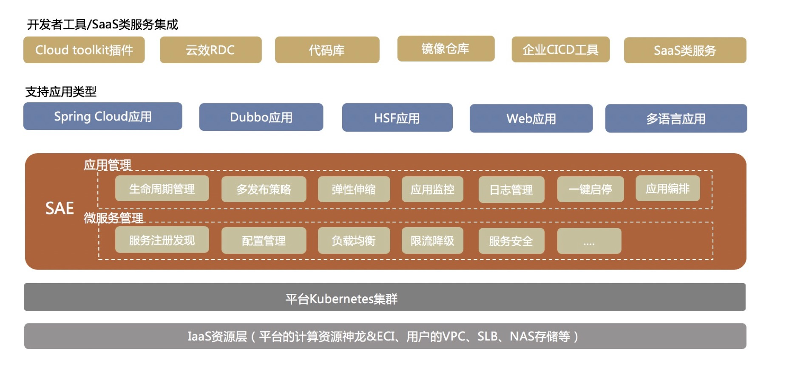
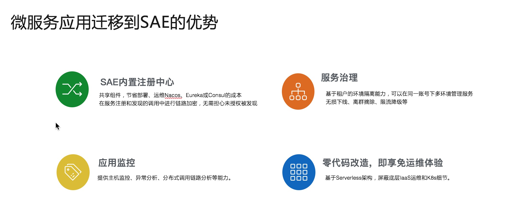
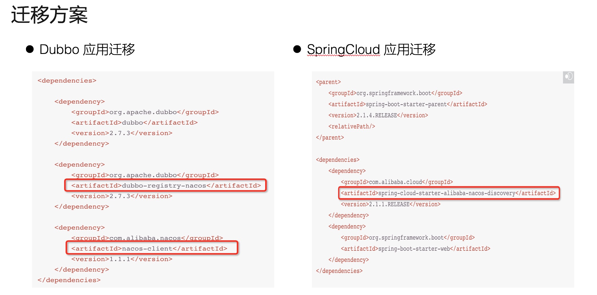
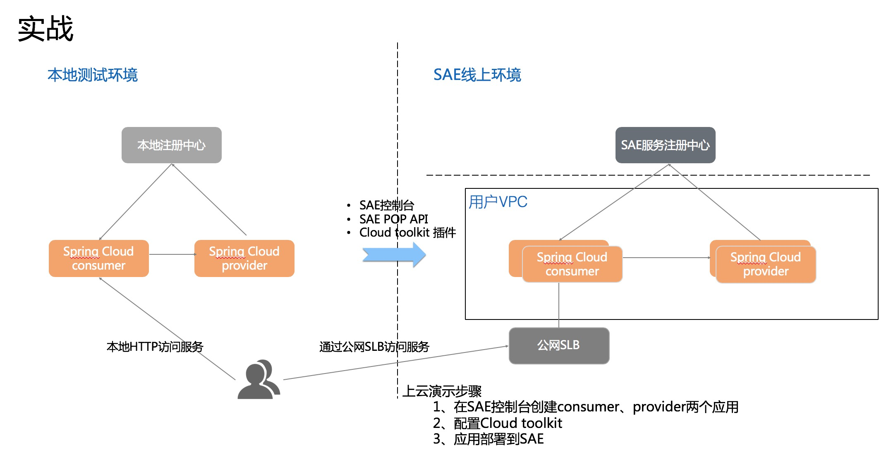

- 01 架构的演进.md
- 02 Serverless 的价值.md
- 03 常见 Serverless 架构模式.md
- 04 Serverless 技术选型.md
- 05 函数计算简介.md
- 06 函数计算是如何工作的？.md
- 07 函数粘合云服务提供端到端解决方案.md
- 08 函数计算的开发与配置.md
- 09 函数的调试与部署.md
- 10 自动化 CI&CD 与灰度发布.md
- 11 函数计算的可观测性.md
- 12 典型案例 1：函数计算在音视频场景实践.md
- 13 典型案例 3：十分钟搭建弹性可扩展的 Web API.md
- 14 Serverless Kubernetes 容器服务介绍.md
- 15 Serverless Kubernetes 应用部署及扩缩容.md
- 16 使用 Spot 低成本运行 Job 任务.md
- 17 低成本运行 Spark 数据计算.md
- 18 GPU 机器学习开箱即用.md
- 19 基于 Knative 低成本部署在线应用，灵活自动伸缩.md
- 20 快速构建 JenkinsGitlab 持续集成环境.md
- 21 在线应用的 Serverless 实践.md
- 22 通过 IDEMaven 部署 Serverless 应用实践.md
- 23 企业级 CICD 工具部署 Serverless 应用的落地实践.md
- 24 Serverless 应用如何管理日志&持久化数据.md
- 25 Serverless 应用引擎产品的流量负载均衡和路由策略配置实践.md
- 26 Spring CloudDubbo 应用无缝迁移到 Serverless 架构.md
- 27 SAE 应用分批发布与无损下线的最佳实践.md
- 28 如何通过压测工具+ SAE 弹性能力轻松应对大促.md
- 29 SAE 极致应用部署效率.md
26 Spring CloudDubbo 应用无缝迁移到 Serverless 架构
背景

通过前面几节课程的学习，相信大家对于 SAE 平台已经有了一定的了解，SAE 基于 IaaS 层资源构建的一款 Serverles 应用托管产品，免除了客户很多复杂的运维工作，开箱即用、按用量付费；并且提供了丰富的 Open API 可以很容易地与其他平台做集成。
本文将为大家介绍 SAE 在微服务方面的一些能力，SAE 产品把 Serverless 技术和微服务做了很好的结合，天然支持 Java 微服务应用的托管和服务治理，对 SpringCloud/Dubbo 微服务应用能够在只修改配置和依赖，不修改代码的情况下迁移到 SAE 上，并提供服务治理能力，比如基于租户的微服务隔离环境、服务列表、无损下线、离群摘除、应用监控以及调用链分析等。
本次课程分为三部分来介绍，分别介绍微服务应用迁移到 SAE 的优势，如何迁移 SpringCloud/Dubbo 应用到 SAE 上，以及针对 SpringCloud 应用迁移的实践演示。
迁移到 SAE 的优势

在介绍迁移之前，先介绍下 SpringCloud/Dubbo 应用迁移到 SAE 的优势：
- SAE 内置注册中心：所有用户共享注册中心组件，SAE 帮助用户运维，这就节省了用户的部署、运维成本；在服务注册和发现的过程中进行链路加密，无需担心被未授权的服务发现。
- 服务治理：SAE 有命名空间的概念，是基于微服务租户的逻辑隔离环境，用户可以使用不同的命名空间来隔离微服务的注册、发现和调用，提供无损下线、离群摘除和限流降级等服务治理能力。
- 应用监控：SAE 针对微服务应用提供主机监控、异常栈分析以及分布式调用链路分析等能力，可以提升微服务应用的可观测性和诊断能力。
- 零代码改造：简单接入就可以享受免运维体验。
SpringCloud/Dubbo 迁移方案
那如何迁移 SpringCloud/Dubbo 应用到 SAE 呢？我们只需要修改添加依赖和配置，就可以把应用部署到 SAE 上。

Dubbo 应用需要添加 dubbo-register-nacos 和 nacos-client 依赖；SpringCloud 应用需要添加 spring-cloud-starter-alibaba-nacos-discovery 即可。
SpringCloud/Dubbo 应用迁移实战
Spring Cloud 提供了简化应用开发的一系列标准和规范。
目前业界流行的 Spring Cloud 具体实现有 Spring Cloud Netflix、Spring Cloud Consul、Spring Cloud Gateway 和 Spring Cloud Alibaba 等。
如果您熟悉 Spring Cloud 中的 Eureka、Consul 和 ZooKeeper 等服务注册组件，但未使用过 Spring Cloud Alibaba 的服务注册组件 Nacos Discovery，那么您仅需将服务注册组件的服务依赖关系和服务配置替换成 Spring Cloud Alibaba Nacos Discovery，无需修改任何代码。
Spring Cloud Alibaba Nacos Discovery 同样实现了 Spring Cloud Registry 的标准接口与规范，与您之前使用 Spring Cloud 接入服务注册与发现的方式基本一致。

接下来针对 SpringCloud 应用迁移过程进行演示，演示过程请点击视频课：https://developer.aliyun.com/lesson*2026*19003 进行观看。
© 2019 - 2023 Liangliang Lee. Powered by gin and hexo-theme-book.